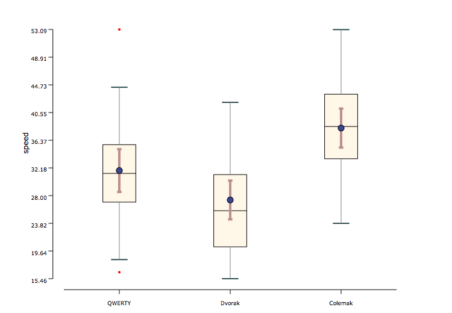
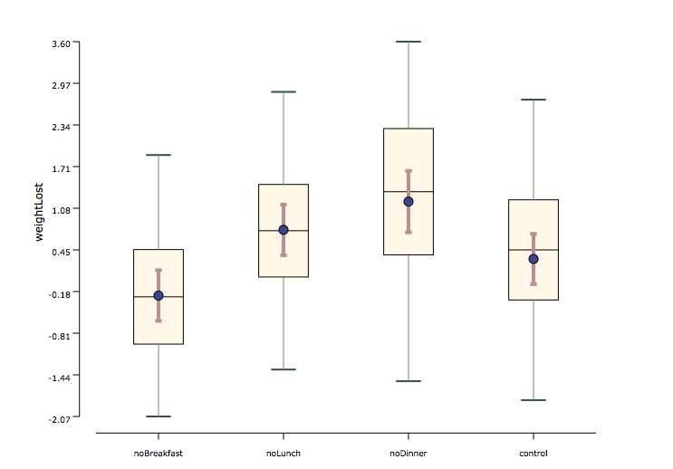

One-way ANOVA is used when 3 or more conditions are compared and the independent variable is a between-groups factor (different participants are used for different conditions). It can be used when the distributions are normal and when homogeneity of variances is met (i.e., the distributions have equal variances).
Conditions:
- Between-subjects experimental design
- The number of Independent Variable is one
- The number of levels in Independent Variable are more than two
- Your dependent variable should be measured at the interval or ratio level (i.e., they are continuous)
- Your dependent variable should be approximately normally distributed for each category of the independent variable
- There should be no significant outliers
- There needs to be homogeneity of variances
Examples:
Example 1: In a text entry user study, three keyboard layouts (QWERTY and DVORAK and Colemak) were compared in a between-subjects experimental design. As shown in the graph below, the measured task completion time were normally distributed in each condition, and their variance were radically same.

Example 2: In a weight loss user study, weight lost of participants is considered under four different conditions (skip breakfast, skip lunch, skip dinner and control), which were compared in a between-subjects experimental design. As shown in the graph below, the measured wight lost was normally distributed in each condition, and their variance were about the same.
